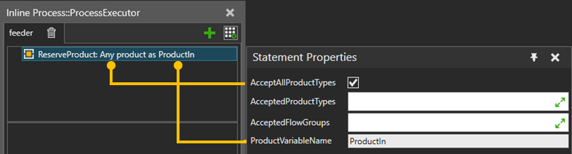

A Reserve Product statement is a requirement statement that allows you to create a requirement for a matching product to be available. Multiple of these reservations can be used in same process. Reserved product can be any or filtered by product types or flow groups. Statement stores product instance to variable which name is defined by ProductVariableName.
ReservedProducts can be used in Buffer, TransportIn, TransportPatternIn, StartTransportIn statements.

| Name | Description |
| AcceptAllProductTypes | Selection to accept any available product type. |
| AcceptedFlowGroups | Selection to accept Flow groups. |
| AcceptedProductTypes | AcceptedProductTypesSelection to accept Product types. |
| ProductVariableName | Name of the output variable where to store the reserved product instance. |